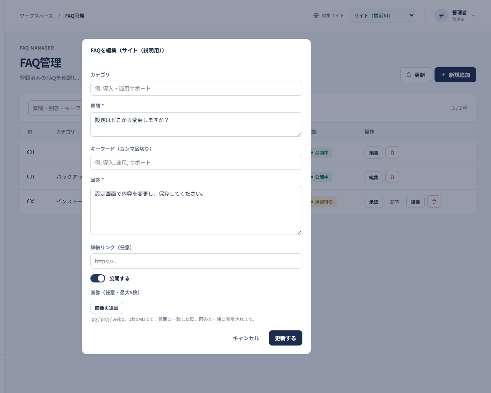
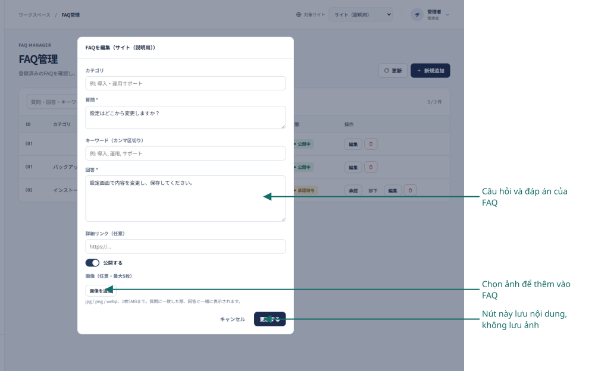

Điều kiện
FAQ phải được lưu trước. Mỗi FAQ tối đa 5 ảnh; mỗi ảnh tối đa 5.242.880 byte, khoảng 5,24 MB. Dùng JPEG, PNG hoặc WebP.

Thêm ảnh vào FAQ đã lưu
FAQ管理 → 編集 → 画像を追加 → chọn JPEG / PNG / WebP → ảnh được lưu .

Tối đa 5 ảnh/FAQ, mỗi ảnh 5 MB . Thêm/xóa ảnh có hiệu lực ngay; キャンセル không hoàn tác. Staff thay ảnh → chờ duyệt. FAQ bị từ chối không được sửa ảnh.
Xóa ảnh
- Mở lại FAQ ở chế độ sửa.
- Bấm nút xóa trên đúng ảnh cần bỏ.
- Xác nhận nếu có yêu cầu và kiểm tra ảnh đã biến mất.
Ảnh chỉ gắn với FAQ. Ảnh trong tài liệu Word/PDF không tự trở thành ảnh của câu trả lời AI.